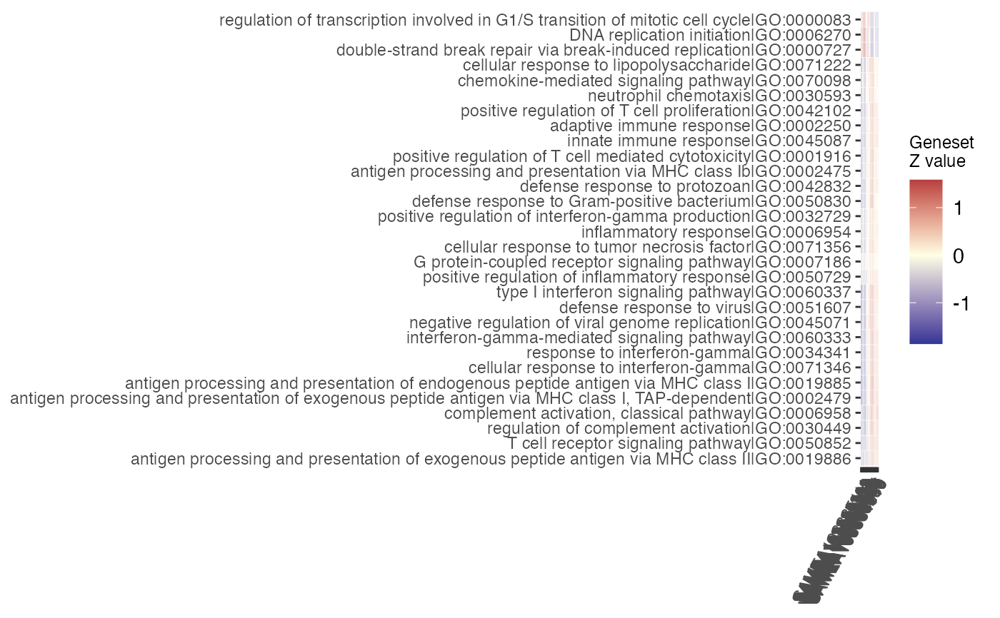

Plots a matrix of geneset Z scores, across all samples
gs_scoresheat( mat, n_gs = nrow(mat), gs_ids = NULL, clustering_distance_rows = "euclidean", clustering_distance_cols = "euclidean", cluster_rows = TRUE, cluster_cols = TRUE )
| mat | A matrix, e.g. returned by the |
|---|---|
| n_gs | Integer value, corresponding to the maximal number of gene sets to be displayed. |
| gs_ids | Character vector, containing a subset of |
| clustering_distance_rows | Character, a distance measure used in clustering rows |
| clustering_distance_cols | Character, a distance measure used in clustering columns |
| cluster_rows | Logical, determining if rows should be clustered |
| cluster_cols | Logical, determining if columns should be clustered |
A ggplot object
gs_scores() computes the scores plotted by this function
library("macrophage") library("DESeq2") library("org.Hs.eg.db") library("AnnotationDbi") # dds object data("gse", package = "macrophage") dds_macrophage <- DESeqDataSet(gse, design = ~line + condition)#>rownames(dds_macrophage) <- substr(rownames(dds_macrophage), 1, 15) dds_macrophage <- estimateSizeFactors(dds_macrophage)#>vst_macrophage <- vst(dds_macrophage) # annotation object anno_df <- data.frame( gene_id = rownames(dds_macrophage), gene_name = mapIds(org.Hs.eg.db, keys = rownames(dds_macrophage), column = "SYMBOL", keytype = "ENSEMBL"), stringsAsFactors = FALSE, row.names = rownames(dds_macrophage) )#># res object data(res_de_macrophage, package = "GeneTonic") res_de <- res_macrophage_IFNg_vs_naive # res_enrich object data(res_enrich_macrophage, package = "GeneTonic") res_enrich <- shake_topGOtableResult(topgoDE_macrophage_IFNg_vs_naive)#>#>res_enrich <- get_aggrscores(res_enrich, res_de, anno_df) scores_mat <- gs_scores(vst_macrophage, res_de, res_enrich[1:30,], anno_df) gs_scoresheat(scores_mat, n_gs = 30)